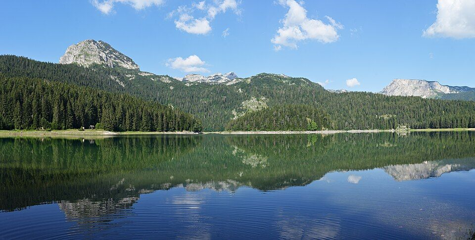
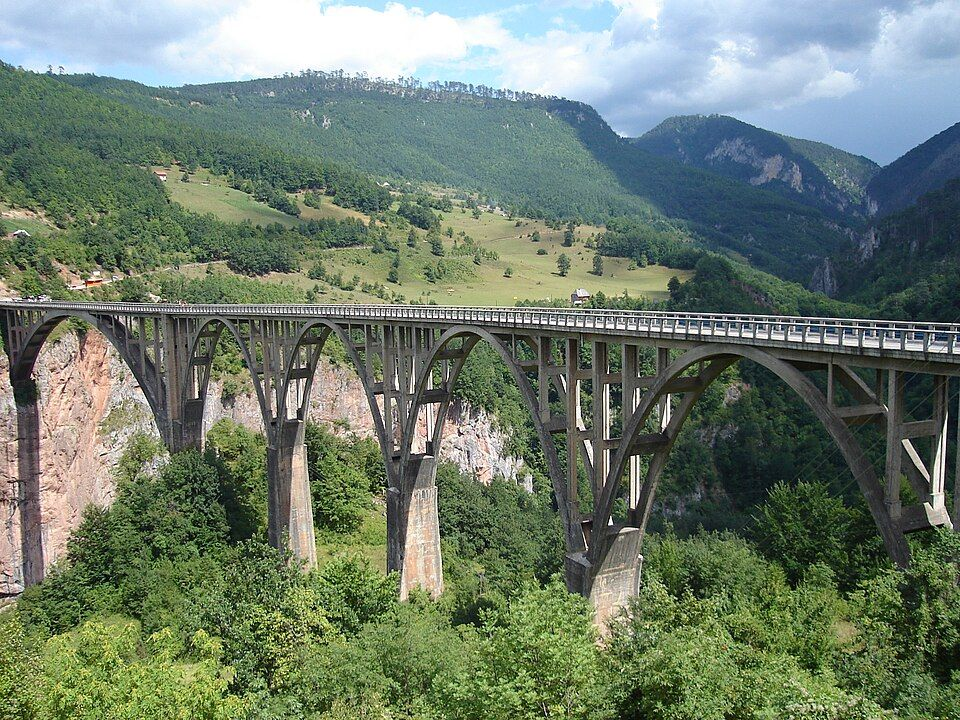
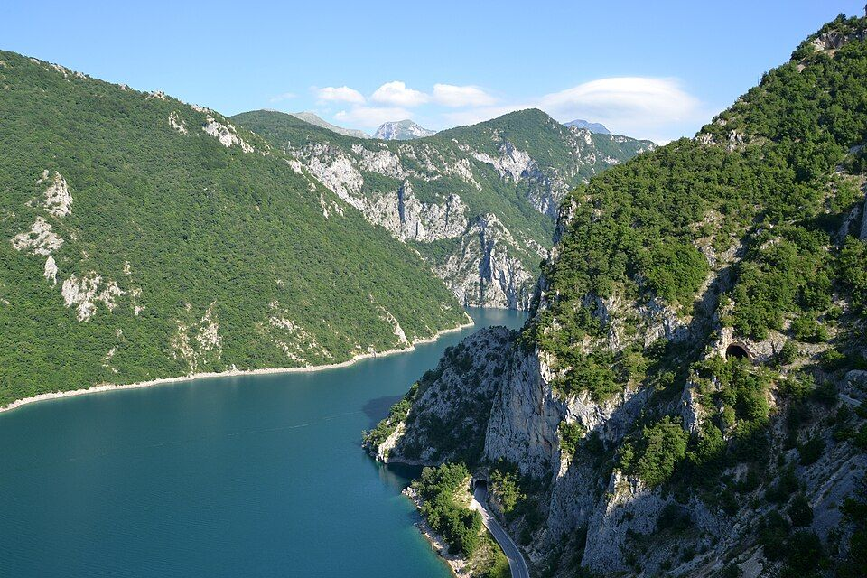

PrimorjeBoka Kotorska
Kotor, Perast i ostrva usred zaliva, pod planinama.

Vozilo sa vozačem ili bez vozača. Izaberite vozilo i termin i pošaljite zahtjev za rezervaciju za 2 minuta.
Aerodrom, poslovni susreti, vjenčanja i ture po Crnoj Gori.
Rezerviši vožnju → Rent a carIzaberite datume, pogledajte slobodna vozila i pošaljite zahtjev.
Izaberi vozilo →Kalendar kod svakog vozila pokazuje koji dani su zauzeti.
Šaljete zahtjev, a plaćate pri preuzimanju ili po fakturi.
Javljamo se telefonom, WhatsApp-om ili Viberom i potvrđujemo rezervaciju.
Planine, jezera i more su ovdje blizu jedni drugih. Iznajmite auto ili krenite sa našim vozačem.
Kotor, Perast i ostrva usred zaliva, pod planinama.

Stari grad, plaže i noćni život Budvanske rivijere.

Ostrvo-grad iz 15. vijeka, simbol crnogorske obale.

Njegošev mauzolej na 1.657 m i pogled na cijelu Boku.

Najveće jezero na Balkanu: krivine Rijeke Crnojevića, lokvanji i vožnja čamcem.

Stari grad na stijeni nad morem i Velika plaža, najduža pješčana plaža u zemlji.

Crno jezero, vrhovi preko 2.500 m i Žabljak, ljeti i zimi.

Najdublji kanjon u Evropi, most na Đurđevića Tari i rafting.

Jedna od posljednjih prašuma u Evropi i Biogradsko jezero, blizu Kolašina.

Tirkizno jezero u kanjonu Pive, uz put sa tunelima isklesanim u stijeni.

Najviše planine Crne Gore, dolina Grebaje i Ali-pašini izvori kod Gusinja.

Planinski centar: skijanje zimi, šetnje i bicikl ljeti.
Fotografije: Unsplash · Durmitor: Ingo Mehling, CC BY-SA 4.0 · Tara: Cornelius Bechtler, CC BY-SA 3.0 · Piva: Pudelek, CC BY-SA 4.0
Ovdje će biti Vaši kontakti i logo.